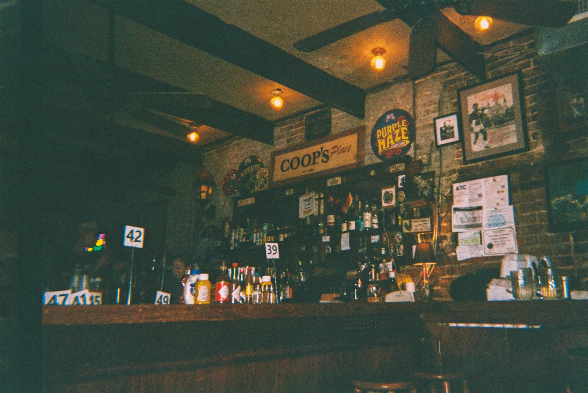

KEISEI KOIWA · CAFE & BAR
京成小岩の、
アットホームなバー。An at-home bar
in Keisei Koiwa.
ダーツにカラオケ、一人飲みも女子会も。おしゃべりしたい夜に、ふらっと寄れるお店です。Darts, karaoke, drinking solo or a girls' night out — drop in whenever you feel like a chat.

tonight
今夜は、なにしに行く？What are you in the mood for?
house notes
ぼーのことAbout Boh
19:00〜2:0019:00–2:00お客様がいらっしゃれば、延長します。We stay open later if guests are still here.
月曜定休Closed Mondaysそれ以外は毎日お待ちしています。Open every other night.
喫煙可Smoking OKお煙草を吸われる方も、どうぞ。Smokers welcome.
access
京成小岩駅南口から徒歩4分4 minutes from Keisei Koiwa Station (South exit)
- 住所Address
- 東京都江戸川区西小岩5-15-20 エチゴビル1FEchigo Bldg. 1F, 5-15-20 Nishi-Koiwa, Edogawa, Tokyo
- 営業時間Hours
- 19:00〜2:00（延長あり）19:00–2:00 (sometimes later)
- 定休日Closed
- 月曜日Mondays
- TEL
- 03-5876-7556
- @cafeandbarboh
Googleマップ ★4.7Google Maps ★4.7